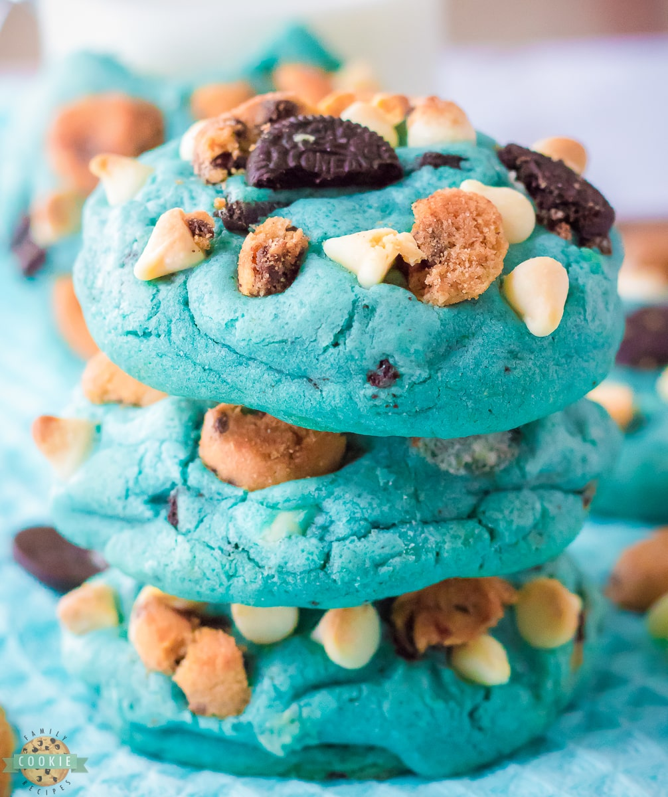
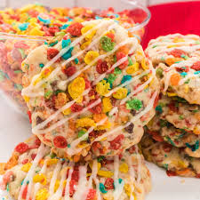
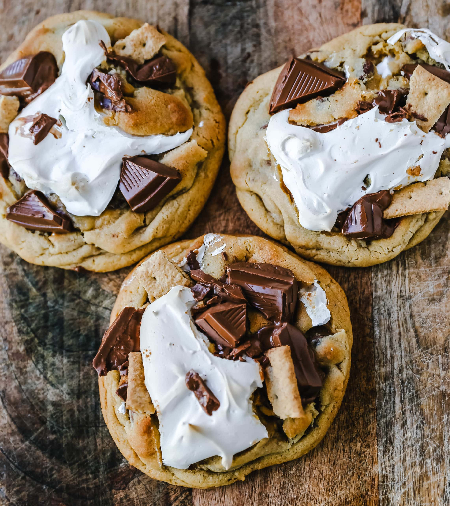

Jessica, https://familycookierecipes.com/cookie-monster-cookies/, Creative commons
To make these cookies its very easy! Once you have your dough and are folding in your chocolate chips, you need to add...
Once you mix all of those ingredients into your dough, roll the dough into balls like normal,a nd let them bake and you are done!

https://www.twosisterscrafting.com/fruity-pebbles-sugar-cookies-with-cereal-milk-icing/, Creative commons
To make these cookies you need...
First mix the fruit pebbles into your dough. Next bake the cookies like how you normaly would. After, melt your white chocolate chips in a bowl, and put it into an piping bag, and drizzle it on the cookies. If you dont have one, you can try to drizzle it on with a spoon, and then you are done!

Melissa Stadler, https://www.modernhoney.com/chocolate-chip-smores-cookies/, Creative Commons
To make this you will need...
For these type of cookies people dont usally add chocolate chips, but if you want to add them you can! First, once you have your dough, roll it up into a ball and place it on the baking pan. Next add a marshmellow in the center into each ball of dough. Next, once the cookies are done baking, you can add the Hersheys peice of chocolate on top of the cookie. Then, you can melt the chocolate chips and drizzle it onto the cookies using either a spoon or piping bag and then you are done!
Karen Arnold, https://www.publicdomainpictures.net/en/view-image.php?image=36414&picture=yellow-polka-dot-background, Creative Commons